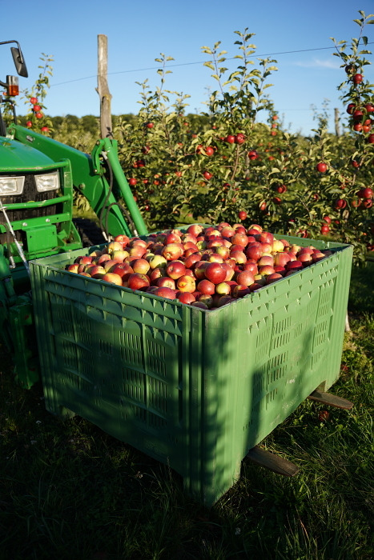
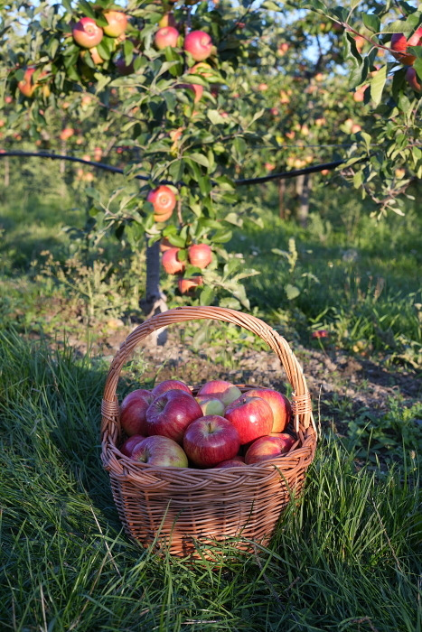
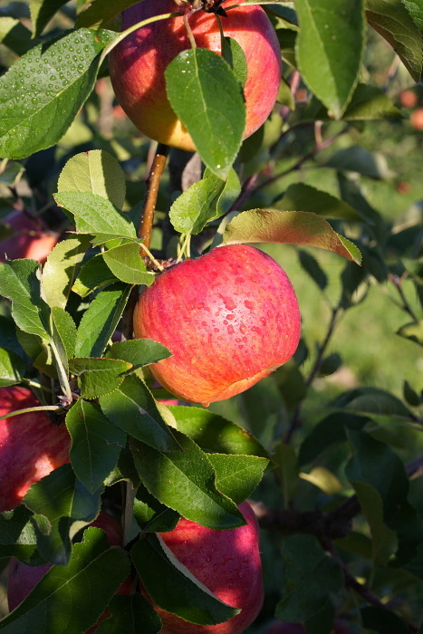
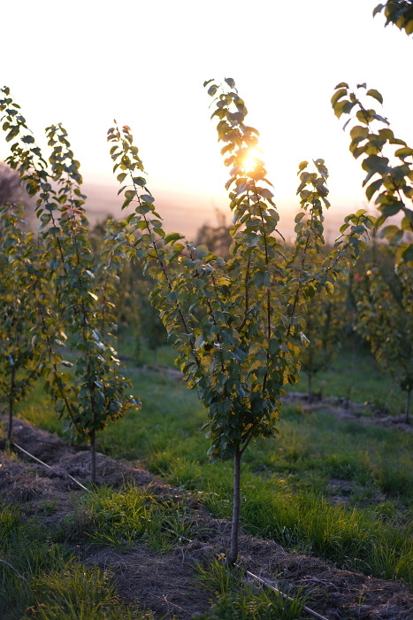

Šetrnější pěstování
Rezistentní jabloně a integrovaná produkce.
Bělkovice-Lašťany · Olomoucko
Na devíti hektarech mezi Olomoucí a Šternberkem pěstujeme jablka, meruňky, švestky a černý rybíz v režimu integrované produkce ovoce.
Prodejní dobu si ověřte přímo na farmě.
Před cestou nám zavolejte.


Náš příběh
Farma Letocha leží v Bělkovicích-Lašťanech. Obhospodařujeme přibližně devět hektarů jabloní, slivoní, meruněk a černého rybízu.
Sady jsou vedené v režimu integrované produkce ovoce. Pěstované odrůdy jabloní jsou rezistentní, a proto vyžadují výrazně méně chemického ošetřování. Většina úrody putuje přímo k lidem prostřednictvím prodeje ze dvora.
Rezistentní jabloně a integrovaná produkce.
Většina produkce se prodává přímo ze dvora.
Co u nás roste
Sezóna začíná rybízem a prvními meruňkami. Pokračuje švestkami a uzavírají ji jablka. Přesné termíny vždy určuje počasí a zralost plodů.

Pěstujeme Topaz, Rajku, Rubinolu a Šampion. Rezistentní odrůdy pro přímý konzum, Topaz také na uskladnění.
Osm odrůd s postupným dozráváním od konce června do konce srpna. V sezóně také samosběr.
Více o samosběruOdrůda Titánie se sklízí speciálním sklízečem na přelomu června a července. Samosběr je možný po dohodě.
Domluvit odběrStanley a Gabrovská. Snadno se oddělují od pecky a hodí se k jídlu, sušení, na povidla i slivovici.
Více o samosběruKalendář sklizně
Kalendář je orientační. Zralost ovoce se každý rok posouvá podle průběhu počasí.
Co právě dozrává?Sezóna začíná v červnu rybízem a meruňkami, pokračuje švestkami a uzavírají ji jablka.
Veřejný samosběr
U meruněk a švestek je v sezóně možný samosběr. Černý rybíz si lze nasbírat po předchozí dohodě. Termín vždy platí až po potvrzení farmou.
Načítám informace o dostupných termínech.
Rezervace platí až po potvrzení farmou. Podrobnosti obdržíte při potvrzení termínu.
Nezávazná rezervace
Vyberte termín a pošlete nám žádost ze svého e-mailu. Ozveme se vám s potvrzením.
Zvolte předběžný slot, který vám vyhovuje, a odešlete krátkou žádost.
Farma ověří zralost a počasí, potvrdí čas a pošle informace k příjezdu.
Užijte si sklizeň přímo v místě, kde ovoce během roku rostlo.
Fotogalerie
Kde nás najdete
Farma se nachází v obci Bělkovice-Lašťany, na půl cesty mezi Olomoucí a Šternberkem.
Prohlédněte si mapu níže nebo si jedním kliknutím spusťte navigaci až k farmě.
Kontakt
Prodejní dobu si ověřte přímo na farmě. Před cestou nám zavolejte. Před cestou si ověřte aktuální dostupnost ovoce.

Časté otázky
Nenašli jste odpověď? Zavolejte. Aktuální dostupnost se dá nejlépe ověřit přímo.
602 793 987Rádi vám poradíme telefonicky nebo e-mailem.